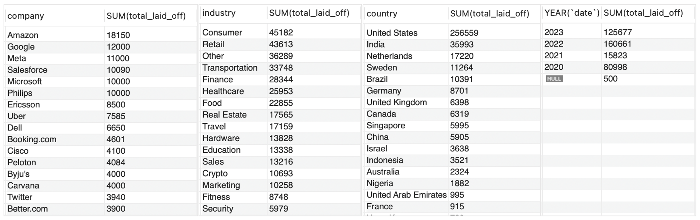
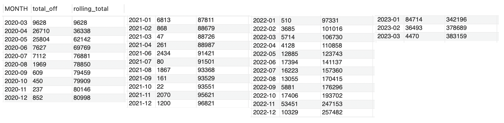
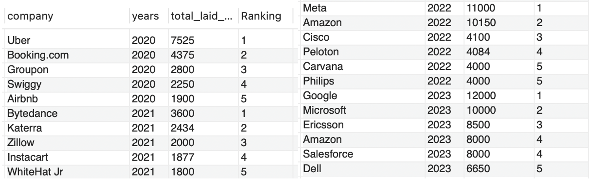

Exploratory Data Analysis (EDA) of Global Layoffs in SQL
Personal Project - Continued from Data Cleaning in SQL
Objective
In this project, I conducted an exploratory data analysis (EDA) on a dataset containing information about global layoffs from 2020 to early 2023 to uncover patterns and insights related to the layoffs.
- Identify the most affected companies, industries, and countries
- Analyze layoff trends over the specificed period
Dataset
- World Layoffs, 2020 - early 2023
- Source: AlexTheAnalyst GitHub page
- Fields: company, location, industry total number of laid off, percentage of laid off, date, stage of company, country, and fund raised in miilions
Fields Description:
| Field | Description |
|---|---|
| company | Name of the company |
| location | Location of the company |
| industry | Industry to which the company belongs |
| total_laid_off | Total number of employees laid off |
| percentage_laid_off | Percentage of employees laid off in the company |
| date | Date of the layoff event |
| stage | Stage of the company (eg: Seed, Series A-J, Acquired, Private Equity, Post-IPO) |
| country | Country where the company is located |
| funds_raised_millions | Funds raised by the company in millions |
Analysis & Findings
Date range of data
Use MIN & MAX on date column to get the date range of data: Mar 11, 2020 to Mar 6, 2023.
The dataset effectively captures layoffs that were largely impacted by Covid lockdowns and regarding economics slowdowns.
From mid 2022 and into 2023, it will be effective in looking into the massive layoffs by major tech companies.
Companies that went completely under
Identify companies with 100% layoffs, indicating closure or total shutdown, using WHERE percentage_laid_off = 1.
Total laid off by vairous dimensions for the whole span in dataset
SELECT company, SUM(total_laid_off)
FROM layoffs_staging2
GROUP BY company
ORDER BY 2 DESC;
- By company: Major companies (eg: Amazon, Google, Meta, Salesforce, Microsoft) are in the top of the list.
- By industry: Consumer, retail, transportation industries were most affected.
- By country: US were significantly affected with respect to rest of the world. It could be partly due to the data collection methods. However, since many of major companies like above are located in the US, the number makes sense.
- By year: There are only 2 months of data for 2023, but it ranked as most affected of the period.
Progression of layoffs
WITH CTE_Rolling_Total AS(
SELECT SUBSTRING(`date`,1,7) AS `MONTH`, SUM(total_laid_off) AS total_off
FROM layoffs_staging2
WHERE SUBSTRING(`date`,1,7) IS NOT NULL
GROUP BY `MONTH`
ORDER BY 1 ASC
)
SELECT `MONTH`, total_off,
SUM(total_off) OVER(ORDER BY `MONTH`) AS rolling_total
FROM CTE_Rolling_Total;
Rolling total of layoffs by month allows to gain insight into how the layoffs progressed over time. The number of layoffs is significantly high in Apr and May of 2020, quickly pushing the total since start of dataset to 62,142. There are no significant surge, and the total number reach 100K in Feb 2022. From May 2022 to Feb 2023, the monthly layoffs rise to 5 digits, except for Sep 2022. Nov 2022, Jan and Feb 2023 saw the exceptionally high monthly layoffs: 53.5K, 84.7K, and 36.5K, respectively.
Top 5 companies by layoffs per year
WITH CTE_Company_Year (company, years, total_laid_off) AS(
SELECT company, YEAR(`date`), SUM(total_laid_off)
FROM layoffs_staging2
GROUP BY company, YEAR(`date`)
), CTE_Company_Year_Rank AS (
SELECT *,
DENSE_RANK() OVER (PARTITION BY years ORDER BY total_laid_off DESC) AS Ranking
FROM CTE_Company_Year
WHERE years IS NOT NULL
)
SELECT *
FROM CTE_Company_Year_Rank
WHERE Ranking <= 5;
The query uses two CTEs: first one to get sum of total layoffs by company and year, and
second one to add DENSE_RANK and filter NOT NULL years. It then filters top 5 companies in each year.
DENSE_RANK allows to assign ranks numerically, instead of positionary, so that when there are tie, the next rank has '+1'.
(eg: In 2023, Amazon and Salesforce both laid off 8,000 employees, ranking 4th. The next highest was Dell with 6,650 cuts, ranking 5th.)
In 2020, we see some companies in Transportation & Travel Industry (eg: Uber, Booking.com, Airbnb), as people were suddenly restricted for non-essential travels due to Covid lockdowns. Over 2021 to 2023, as the effects of Covid begin to normalize, we see layoffs concentrated more in Tech Industry.